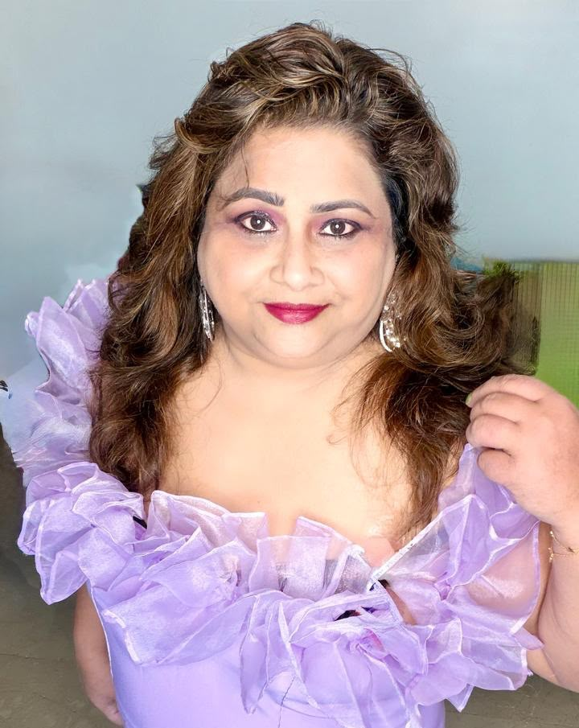

About Rumjhum (Nidhi Verma)
Founder, Host, and Resilience Advocate dedicated to bringing raw, unedited stories of founders, entrepreneurs, and change-makers into the light.
1. The Spark Behind the Mic
Every successful founder, entrepreneur, or leader has an unseen chapter of pain, struggle, and perseverance. Suffer Se Safar Tak was born to show that behind every triumph is a story of refusing to give up.
2. Personal Journey of Resilience
Having gone through personal loss, brain hemorrhage, a paralytic attack, walking with a stick, chemotherapy, and living with Multiple Sclerosis for over 16 years has taught me that physical challenges never define your spirit.
3. Milestones & Achievements
Felicitated by the Governor of Maharashtra, honored by the Delhi Management Association, Shabash Nari title, and Ms. Vibrant at Nari First. Featured in modelling for Malabar Gold & Diamonds and building interior design & Pickle Potli ventures.
4. Championing Women & Founders
Looking for passionate founders, business owners, and women entrepreneurs who have weathered real storms to build something meaningful and inspire thousands with their authentic stories.
5. A Lesson Learned the Hard Way
"Life has tested me through immense personal loss, severe health battles including multiple sclerosis and a brain hemorrhage, and the hard realization that true healing comes entirely from within. I learned that you cannot play the victim card or wait for others to understand your grief... Today, I live for myself and for my truth—to be remembered simply as Rumjhum."
6. Message to Listeners
Never give up, no matter how heavy the storm gets. Remember: every founder, entrepreneur has a story, and every startup has a journey. Keep going, because nothing is impossible when you choose to get up and make things happen.